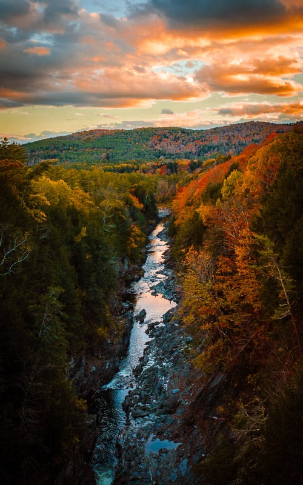

Its vividly painted houses, basking in the warm golden glow of the evening sun, offer a picturesque sight that resonates deeply with the joyous and spirited theme of the beloved movie.
Guanajuato at twilight is a painting that comes to life, a perfect blend of reality and the fantastic world depicted in "Coco.".The array of colors presented by the quaint houses form a harmonious canvas that radiates a tranquil yet vibrant energy as the day transitions to night
Chichen Itza
Chichen Itza showcases the grandeur of Mayan civilization through its iconic, steeply-tiered pyramids.Chichen Itza showcases the grandeur of Mayan civilization through its iconic, steeply-tiered pyramidsChichen Itza showcases the grandeur of Mayan civilization through its iconic, steeply-tiered pyramidsChichen Itza showcases the grandeur of Mayan civilization through its iconic, steeply-tiered pyramids. The Mexico Plaza teems with vibrant life as locals and visitors alike gather amidst historic architectureThe Mexico Plaza teems with vibrant life as locals and visitors alike gather amidst historic architectureThe Mexico Plaza teems with vibrant life as locals and visitors alike gather amidst historic architectureThe Mexico Plaza teems with vibrant life as locals and visitors alike gather amidst historic architecture.Teotihuacan mesmerizes with its immense pyramids, tracing back to a pre-Aztec civilization steeped in mystery.Teotihuacan mesmerizes with its immense pyramids, tracing back to a pre-Aztec civilization steeped in mystery.Teotihuacan mesmerizes with its immense pyramids, tracing back to a pre-Aztec civilization steeped in mystery.>As night falls, Guanajuato transforms into a magical spectacle,>As night falls, Guanajuato transforms into a magical spectacle,>As night falls, Guanajuato transforms into a magical spectacle,As night falls, Guanajuato transforms into a magical spectacle. The Mexico Plaza teems with vibrant life as locals and visitors alike gather amidst historic architectureThe Mexico Plaza teems with vibrant life as locals and visitors alike gather amidst historic architectureThe Mexico Plaza teems with vibrant life as locals and visitors alike gather amidst historic architectureThe Mexico Plaza teems with vibrant life as locals and visitors alike gather amidst historic architecture.
London: A City of Heritage and Modernity
Geographical Location: Europe
As one of the most iconic cities in the world, London carries a rich history that is matched by its continuous growth and evolution. A powerhouse of culture, politics, and finance, it stands as a city where the past and present exist harmoniously side by side.
At the heart of the city lies the majestic British Museum, a sanctuary of the world’s heritage, housing a vast collection of world art and artifacts, narrating the tales of human history, art, and culture. Nearby, the historical Victoria and Albert Museum and the Natural History Museum await, offering a rich exploration of art, design, and the natural world.From the ancient towers that narrate tales of a regal past to modern architectural marvels that reach for the skies, London offers an unrivaled blend of history and modernity. The city invites locals and tourists alike to immerse themselves in its vibrant life, where every street corner unfolds a story.
British Museum
Home to a plethora of world art and artifacts, the British Museum offers a journey through the world's cultures. The lion statue is a remarkable sculpture that stands guard at the museum, representing its grandeur.
Victoria and Albert Museum
This museum is a feast for the art aficionados, presenting a rich collection of artifacts spanning over 5000 years, including ceramics, fashion, furniture, glass, metalwork, paintings, photographs, and more.Visitors are greeted by a fascinating array of natural history exhibits, including dinosaur skeletons and meteorites. Here are glimpses of both its stunning exterior and its rich interior..Big Ben, the deep-bell clock tower is one of London's iconic landmarks. King's Cross Station, a major railway and underground station in London, is known for its remarkable architecture and its association with the Harry Potter seriesic than Quechee Gorge. This natural treasure is located in Quechee State Park near the VT-NH border. Hike down to the gorge if you wish, but the best views are from the bridge, just a two-minute walk from the parking lot. Visitors are greeted by a fascinating array of natural history exhibits, including dinosaur skeletons and meteorites. Here are glimpses of both its stunning exterior and its rich interior.
Vatican: A Beacon of Art and Spirituality
Geographical Location: Europe
The Vatican, the smallest independent state in the world, stands as a towering beacon of art, history, and spirituality. Nestled in the heart of Rome, this citadel of Catholicism is a treasure trove of art and architectural wonders, resonating deeply with centuries of religious devotion and artistic endeavor.
As the day unfolds, the Vatican offers a journey through time, allowing you to trace the footsteps of legendary artists and pontiffs who left an indelible mark in history. The iconic spiral staircase of the Vatican Museum narrates stories through its curvaceous path, leading to artistic marvels such as the Athenian Academy painting, a true depiction of scholarly discourse.
Vatican Museums
This iconic painting housed in the Vatican Museums was the inspiration behind the Milan Technological Institute's emblem, linking art to modern education.This iconic painting housed in the Vatican Museums was the inspiration behind the Milan Technological Institute's emblem, linking art to modern education.This iconic painting housed in the Vatican Museums was the inspiration behind the Milan Technological Institute's emblem, linking art to modern education.St. Peter's Square is the monumental plaza in front of St. Peter's Basilica. With its massive columns and beautiful fountains, it is a masterwork of Renaissance architecture.St. Peter's Square is the monumental plaza in front of St. Peter's Basilica. With its massive columns and beautiful fountains, it is a masterwork of Renaissance architecture.St. Peter's Square is the monumental plaza in front of St. Peter's Basilica. With its massive columns and beautiful fountains, it is a masterwork of Renaissance architecture.The mesmerizing spiral staircase of the Vatican Museums, an architectural marvel.The mesmerizing spiral staircase of the Vatican Museums, an architectural marvel.The mesmerizing spiral staircase of the Vatican Museums, an architectural marvel..The painting that inspired the Milan Technological Institute emblem, representing the convergence of art and technology.The painting that inspired the Milan Technological Institute emblem, representing the convergence of art and technology.The painting that inspired the Milan Technological Institute emblem, representing the convergence of art and technology.The expansive St. Peter's Square in Vatican, showcasing the grandeur of Renaissance architecture.The expansive St. Peter's Square in Vatican, showcasing the grandeur of Renaissance architectureThe expansive St. Peter's Square in Vatican, showcasing the grandeur of Renaissance architecture
Shanghai:The Fusion of Tradition and Modernity
Geographical Location: Asia
Shanghai, a vibrant metropolis, stands as a testament to China's rapid growth and development. The city is a harmonious blend of traditional and modern elements, offering both historical richness and futuristic architecture.
From the historic Yu Garden to the towering Shanghai Tower, the city offers a rich tapestry of experiences. The Wukang Building stands as a symbol of the city's historical architecture, while the China Art Museum showcases the finest art pieces, narrating the tales of Chinese history and culture.
Yu Garden
A historic garden that offers a peaceful retreat in the heart of the bustling city, showcasing traditional Chinese architecture and garden design.
Standing tall as the second tallest building in the world, the Shanghai Tower is a marvel of modern architecture, offering breathtaking views of the city.A dynamic view of Shanghai, showcasing the city's vibrant life through a time-lapse.The historic Wukang Building, a testament to Shanghai's rich architectural history. The China Art Museum, home to a rich collection of Chinese art and cultural artifacts..
Vermont: Nature's Canvas
Geographical Location: Northeastern United States
Vermont, known as the Green Mountain State, is a haven for nature enthusiasts. The state is renowned for its stunning landscapes, including the breathtaking Quechee Gorge and the serene Lake Willoughby.
As you traverse through Vermont, you will be greeted by picturesque views, whether it's the vibrant hues of fall foliage or the tranquil scenes of cozy cabins nestled amidst nature.
Quechee Gorge

Known as Vermont's Little Grand Canyon, Quechee Gorge offers stunning views and hiking trails that promise an adventure amidst nature..A natural wonder, Lake Willoughby is a serene destination offering crystal clear waters surrounded by lush green mountains..A scenic road trip through Vermont, showcasing the vibrant hues of fall foliage.A cozy cabin offering a tranquil retreat in the heart of Vermont's natural beauty.Bingham Falls, a hidden gem in Stowe, offering a peaceful escape amidst nature.